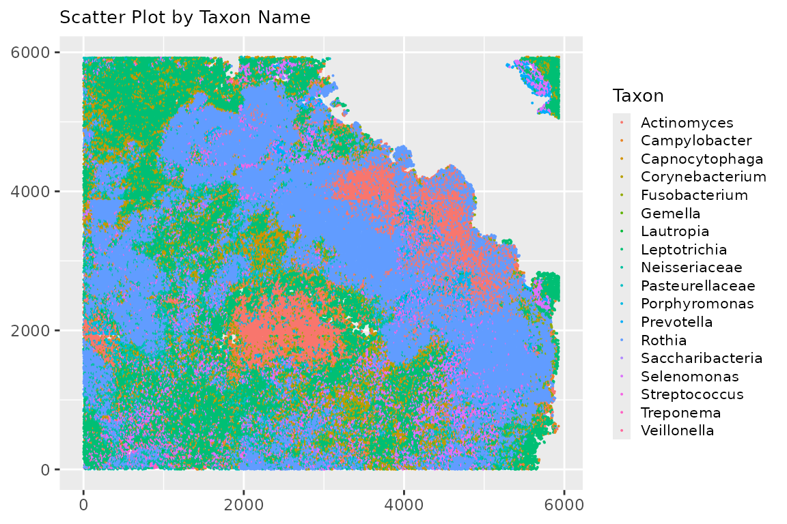
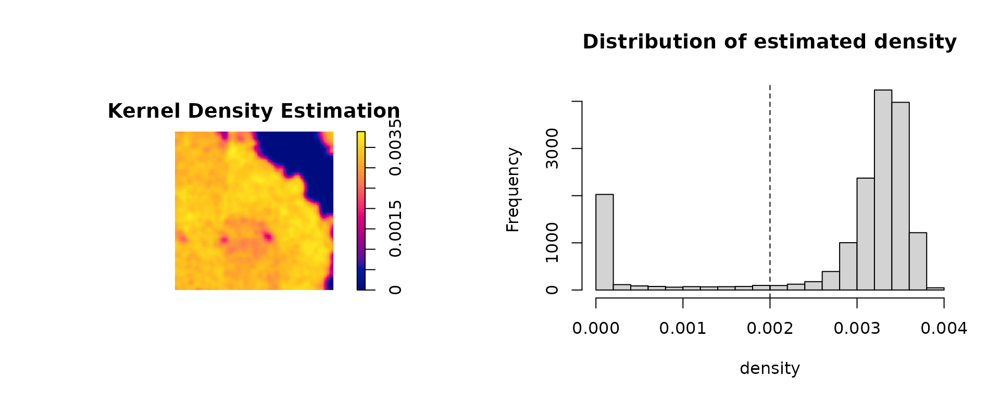
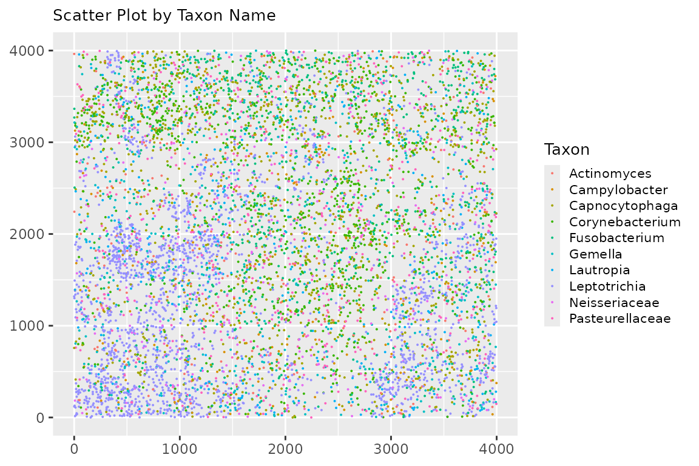
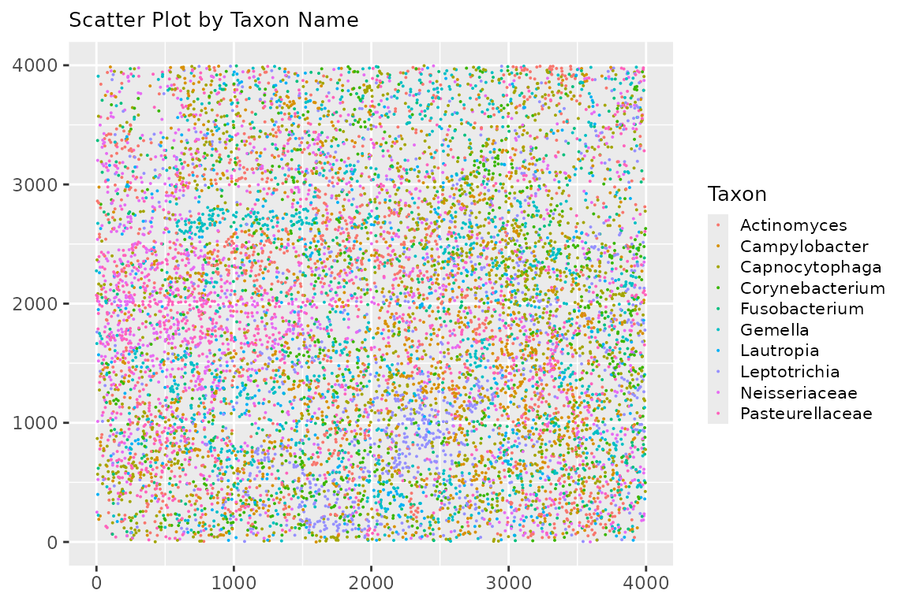
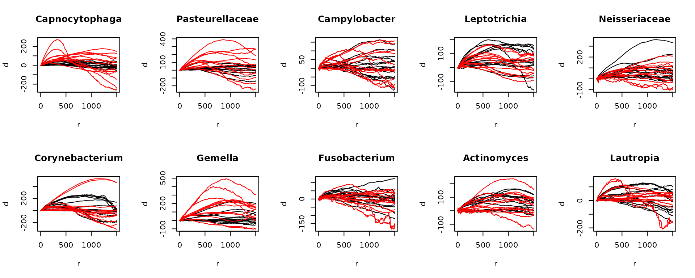

MiSA Vignette
Analysis of image-based spatial microbiome data
Ruoqian Liu, Wodan Ling
Source:vignettes/MiSA_vignette.Rmd
MiSA_vignette.RmdOverview
MiSA identifies disease-associated spatial dysbiosis by testing whether the spatial organization of microbial taxa differs between clinical groups, using image-based microbiome data. A typical analysis follows these steps:
-
Preprocessing: identify the region of study (i.e.,
the area colonized by microbes) in each image and build observation
windows (
kde_est(),alpha_windows()). - Taxon-level testing: characterize the spatial distribution of each taxon with the summary function d(r) and compare it between groups using the four MiSA variants.
- Community-level testing: combine the taxon-level results to assess overall spatial dysbiosis.
Step 1 is described in the Preprocessing section, and steps 2 and 3 in MiSA test section.
Step 1 is optional. Users who already have observation windows for
their images can pass them directly to estimate_L() when
running MiSA. If step 1 is skipped entirely, estimate_L()
uses a default window: the convex hull of the cell locations.
The following packages are required for functions and examples in the MiSA package: ggplot2, grid, harmonicmeanp, spatstat.explore, spatstat.geom, stats, deldir, sf.
Preprocessing
In this step, we determine the true region of study (i.e., the area colonized by microbes) in each image. We first estimate the density of cells across the image, then build observation windows around the high-density regions.
Visialuze the example data
The example image is stored as a data frame with columns
x and y (the spatial coordinates of each cell)
and taxon_name (the taxon identity of each cell).
data(example_image)
plot_centroid(example_image)
Kernel density estimate of cell locations
img_kde <- kde_est(example_image)
# visualize the distribution of density
par(mfrow=c(1,2))
plot(img_kde, main="Kernel Density Estimation")
hist(img_kde$v, main = "Distribution of estimated density", xlab = "density")
abline(v=0.002, lty=2)
Determine region of study
alpha_windows() builds observation windows around the
high-density cell regions in each image. Separated regions are kept
apart, and each is returned as its own owin object, sorted
by area from largest to smallest.
alpha controls how tightly the window follows the shape
of the high-density region, in the same units as the coordinates.
Smaller values give a tighter, more detailed boundary, and larger values
give a smoother one. The default is 200.
We set cutoff = 0.002 based on the histogram of
estimated densities. Areas with a kernel density below 0.002 are
excluded from further analysis.
With fill_holes = TRUE, holes within each region are
filled, so each window is bounded by its outer boundary only.
wins <- alpha_windows(img_kde, alpha = 200, cutoff = 0.002, fill_holes = TRUE)
#> region region_area
#> region1 region1 28766056
#> region2 region2 193402plot_regions() draws all observation window regions on a
single plot, labeled by name. It also returns the union of all regions
as a single window (an owin object), which we save as
W_all.
Because each separated region is returned as its own window, users
can use a single region or combine several (e.g.,
W <- spatstat.geom::union.owin(wins$region1, wins$region2))
as the true region of study.
In this example, we use region1, the largest region, as
the region of study and plot it over the example image.
par(mfrow=c(1,2))
W_all <- plot_regions(wins)
W <- wins$region1
plot(example_image$x, example_image$y, pch=20, col="pink", cex=0.1, main = "Microbial map with study region (window W)", xlab = "", ylab = "")
plot(W, add = TRUE, lwd = 2)When running MiSA, W can be used as the window for this
image by including it in the groupA_window_list or
groupB_window_list argument of estimate_L().
These arguments take a named list with one entry per image, where the
names match the image IDs,
e.g. groupA_window_list <- list("image1" = W, "image2" = NULL, "image3" = NULL, ...).
Images set to NULL use the default window (the convex hull
of the cell locations).
MiSA test
Sample Data
We demonstrate MiSA using the sample data included in the package, which were simulated based on real oral biofilm imaging data. We need imaging data for both the health and disease groups, each provided as a named list of data frames, with each data frame representing one image. Ensure every image in the list has a name assigned to it.
data(diseaseImg.list)
data(healthImg.list)
names(healthImg.list)
#> [1] "image1" "image2" "image3" "image4" "image5" "image6" "image7"
#> [8] "image8" "image9" "image10" "image11" "image12" "image13" "image14"Each image data frame must contain columns named “x”, “y”, and “taxon_name”, representing the x and y spatial coordinates and the corresponding taxon identity. We then visualize two images from the sample data, one from the health group and one from the disease group, by plotting the centroid of each microbial cell.
str(healthImg.list[['image1']])
#> 'data.frame': 7349 obs. of 3 variables:
#> $ x : num 2233 2055 133 735 3835 ...
#> $ y : num 3520 1149 1412 2276 590 ...
#> $ taxon_name: chr "Capnocytophaga" "Pasteurellaceae" "Pasteurellaceae" "Campylobacter" ...
str(diseaseImg.list[['image1']])
#> 'data.frame': 10491 obs. of 3 variables:
#> $ x : num 1059 1870 3061 1607 1557 ...
#> $ y : num 3491 1239 2342 750 456 ...
#> $ taxon_name: chr "Neisseriaceae" "Fusobacterium" "Leptotrichia" "Fusobacterium" ...
plot_centroid(healthImg.list[['image1']])
plot_centroid(diseaseImg.list[['image1']])
Estimate Spatial Summary Function
Estimate L Curves
To estimate the
curves, we first pass the two lists containing our sample imaging data,
healthImg.list and diseaseImg.list to
groupA_image_list and groupB_image_list,
respectively.
A sequence of radii, r_all, must be pre-specified, over
which the
function will be evaluated. This set of radii will be used consistently
across all images and must be carefully determined based on the spatial
range of images. In this example, we pre-specified the sequence of radii
as
,
with a step size of 6. The maximum radius, rmax, was set to
1500, which is
,
with 4000 being the side length of the square image. In general, it is
recommended to set the maximum
no larger than 0.5 times the length of the shortest side of the
enclosing study region, to account for the border effect.
taxa_all contains all taxa of interest.
Users can provide a pre-defined study region for the images in
groupA or groupB by passing input to
groupA_window_list or groupB_window_list. The
input should be a named list for the corresponding group, with each
element being an object of class owin (short for
“observation window”), as required by the window argument
of spatstat.geom::ppp(). If a window is provided, its name
must match the corresponding image’s name in
groupA_image_list or groupB_image_list. Users
can specify a window (study region) for some images and leave others as
NULL. If NULL is provided (either for a single
image or the entire list), the function will go with the default setting
and derive a convex hull from the data.
border_correct can be chosen from "border",
"iso", and "trans". For spatial microbiome
data, it is always recommended to select "border", as the
other two options will substantially increase computation time.
rmax = 1500
r_all <- seq(0, rmax, length.out = 251)
taxa_all <- unique(healthImg.list[[1]]$taxon_name)
L_result <- estimate_L(groupA_image_list=healthImg.list, groupB_image_list=diseaseImg.list,
taxa=taxa_all, r_vec=r_all,
groupA_window_list = NULL, groupB_window_list = NULL,
border_correct = "border")
#> Estimating L for Group A, image1 - using default window (convex hull).
#> Estimating L for Group A, image2 - using default window (convex hull).
#> Estimating L for Group A, image3 - using default window (convex hull).
#> Estimating L for Group A, image4 - using default window (convex hull).
#> Estimating L for Group A, image5 - using default window (convex hull).
#> Estimating L for Group A, image6 - using default window (convex hull).
#> Estimating L for Group A, image7 - using default window (convex hull).
#> Estimating L for Group A, image8 - using default window (convex hull).
#> Estimating L for Group A, image9 - using default window (convex hull).
#> Estimating L for Group A, image10 - using default window (convex hull).
#> Estimating L for Group A, image11 - using default window (convex hull).
#> Estimating L for Group A, image12 - using default window (convex hull).
#> Estimating L for Group A, image13 - using default window (convex hull).
#> Estimating L for Group A, image14 - using default window (convex hull).
#> Estimating L for Group B, image1 - using default window (convex hull).
#> Estimating L for Group B, image2 - using default window (convex hull).
#> Estimating L for Group B, image3 - using default window (convex hull).
#> Estimating L for Group B, image4 - using default window (convex hull).
#> Estimating L for Group B, image5 - using default window (convex hull).
#> Estimating L for Group B, image6 - using default window (convex hull).
#> Estimating L for Group B, image7 - using default window (convex hull).
#> Estimating L for Group B, image8 - using default window (convex hull).
#> Estimating L for Group B, image9 - using default window (convex hull).
#> Estimating L for Group B, image10 - using default window (convex hull).
#> Estimating L for Group B, image11 - using default window (convex hull).
#> Estimating L for Group B, image12 - using default window (convex hull).
#> Estimating L for Group B, image13 - using default window (convex hull).Estimate d Curves
estimate_d takes the estimated
curves for groupA and groupB as input, and
outputs the estimated
curve and the group label (groupA or groupB)
for each image.
d_result <- estimate_d(groupA_L = L_result$groupA_L, groupB_L = L_result$groupB_L, taxa = taxa_all,r_vec = r_all)
#> calculating d for Capnocytophaga
#> calculating d for Pasteurellaceae
#> calculating d for Campylobacter
#> calculating d for Leptotrichia
#> calculating d for Neisseriaceae
#> calculating d for Corynebacterium
#> calculating d for Gemella
#> calculating d for Fusobacterium
#> calculating d for Actinomyces
#> calculating d for LautropiaVisualize curves for each individual taxon, colored by groups.
par(mfrow=c(2,5))
for (taxon in taxa_all){
d.mat <- d_result[[taxon]]
r <- as.numeric(colnames(d.mat$d))
matplot(r, t(d.mat$d), type = "l", lty = 1, col = ifelse(d.mat$group =="groupB", "red","black"), main=taxon, ylab = "d", xlab="r")
}
Data Preparation for MiSA Test
The MiSA_data function prepares
curves for MiSA test. Within each taxon, it first filters out images
with limited spatial range, i.e., images whose
curve does not have valid values up to a radius threshold,
r_thresh. By default (r_thresh = NULL),
curves that do not reach
max(r_all) will be excluded. Users may set
r_thresh based on the scientific question of interest; for
example, r_thresh = 500 will exclude
curves that do not have valid estimates up to
.
For the curves that are kept, the function truncates the estimated
curves to the maximum
shared in common across all images (in both groups) for that taxon.
data_pre <- MiSA_data(est_d = d_result, r_thresh = NULL)MiSA_check drops taxa that are not valid for hypothesis
testing via MiSA, based on the following criteria:
Only one group remains after filtering.
The total sample size is .
has one or fewer valid estimates.
data_checked <- MiSA_check(data_list = data_pre)Use the following code to visualize the curves prepared for hypothesis testing.
par(mfrow=c(2,5))
for (taxon in taxa_all){
d.mat <- data_checked[[taxon]]
r <- as.numeric(colnames(d.mat$d))
matplot(r, t(d.mat$d), type = "l", lty = 1, col = ifelse(d.mat$group =="groupB", "red","black"), main=taxon, ylab = "d", xlab="r")
}
Identify Spatial Dysbiosis via MiSA
MiSA-area
MiSA-area produces taxon-specific
-values
and effect sizes. This function uses whichever group is entered as
groupA as the reference group. In our case, the reference
group is Health. A negative effect size indicates that the summary
statistic
()
is smaller in the reference group (Health) than in the comparison group
(groupB: Disease), and hence reflects a smaller deviation
from CSR for Health compared to Disease. This indicates that the Disease
group is more spatially structured, exhibiting stronger spatial patterns
(e.g., clustering, patches, etc.) in the microbiome context.
A community-level -value is also obtained to assess dysbiosis.
results_area <- MiSA(misa_data_list = data_checked, method = "area")
results_area
#> $taxon_results
#> p.value effect.size
#> Capnocytophaga 1.994187e-07 -0.84049772
#> Pasteurellaceae 1.019428e-03 -0.60702613
#> Campylobacter 1.693855e-01 -0.27082704
#> Leptotrichia 9.429524e-01 0.01867773
#> Neisseriaceae 8.299838e-01 -0.04669432
#> Corynebacterium 7.203142e-01 0.07471091
#> Gemella 1.552475e-04 -0.68173704
#> Fusobacterium 6.159506e-01 -0.10272750
#> Actinomyces 9.050627e-01 -0.02801659
#> Lautropia 4.582687e-01 0.14942182
#>
#> $community_pval
#> p.hmp
#> 1.991295e-06MiSA-sup
Similar to MiSA-area, MiSA-sup produces taxon-specific -values and effect sizes by comparing summary statistic between the two groups.
results_sup <- MiSA(misa_data_list = data_checked, method = "sup")
results_sup
#> $taxon_results
#> p.value effect.size
#> Capnocytophaga 9.970935e-08 -0.84983659
#> Pasteurellaceae 4.188790e-04 -0.64438159
#> Campylobacter 1.545823e-01 -0.28016591
#> Leptotrichia 1.000000e+00 0.00000000
#> Neisseriaceae 6.848475e-01 -0.08404977
#> Corynebacterium 9.050627e-01 -0.02801659
#> Gemella 1.552475e-04 -0.68173704
#> Fusobacterium 6.500355e-01 -0.09338864
#> Actinomyces 7.563768e-01 -0.06537205
#> Lautropia 2.198824e-01 0.24281045
#>
#> $community_pval
#> p.hmp
#> 9.962308e-07MiSA-orig
For the MiSA-orig method, users may want to select radii of interest
and then obtain a combined
-value
across the individual tests performed at those radii. To do this, you
can either pick specific radii using omnibus_r, e.g.,
omnibus_r = c(300, 600, 900). This will compare the
original statistic
at
(consistently used across all taxa) and combine the individual
-values
via HMP.
Alternatively, you may use omnibus_num to specify the
number of radii you would like to test, e.g.,
omnibus_num = 6 will test 6 radii evenly spaced across the
full range of radii available in misa_data_list. Note that
the resulting radii may vary across taxa, since different taxa may have
different spatial ranges.
If omnibus_r is specified, the function will always use
omnibus_r, regardless of the input for
omnibus_num. If omnibus_r is left at its
default (NULL) and omnibus_num is specified,
the function will use omnibus_num instead. If both
omnibus_r and omnibus_num are defaults
(NULL), the function will set
omnibus_num = min(5, c-1), where c is the
number of radii available for that taxon.
results_orig <- MiSA(misa_data_list = data_checked, method = "orig", omnibus_r = NULL, omnibus_num = NULL)
# results_orig <- MiSA(MiSA_data = MiSA_data_list, method = "orig", omnibus_r = c(300, 600, 900))
# results_orig <- MiSA(MiSA_data = MiSA_data_list, method = "orig", omnibus_num = 6)
results_orig[c("taxon_results", "community_pval")]
#> $taxon_results
#> p.value
#> Capnocytophaga 9.384867e-05
#> Pasteurellaceae 1.352155e-04
#> Campylobacter 6.672551e-01
#> Leptotrichia 6.450767e-01
#> Neisseriaceae 7.868130e-01
#> Corynebacterium 7.348531e-01
#> Gemella 1.825689e-03
#> Fusobacterium 5.510112e-01
#> Actinomyces 8.109707e-01
#> Lautropia 8.534590e-01
#>
#> $community_pval
#> p.hmp
#> 0.0005402355Extract the -values per radius.
results_orig[["per_r_pval"]]
#> $Capnocytophaga
#> r 300 r 600 r 900 r 1200 r 1500
#> 1.944332e-05 5.276619e-04 3.498844e-01 9.050627e-01 9.809717e-01
#>
#> $Pasteurellaceae
#> r 300 r 600 r 900 r 1200 r 1500
#> 2.712094e-05 6.618208e-03 2.198824e-01 6.500355e-01 6.500355e-01
#>
#> $Campylobacter
#> r 300 r 600 r 900 r 1200 r 1500
#> 0.1693855 0.5185950 0.9050627 0.7563768 0.8299838
#>
#> $Leptotrichia
#> r 300 r 600 r 900 r 1200 r 1500
#> 0.7203142 0.6848475 0.4295995 0.2588405 0.3254765
#>
#> $Neisseriaceae
#> r 300 r 600 r 900 r 1200 r 1500
#> 0.5185950 0.5826437 0.6848475 0.7203142 0.6159506
#>
#> $Corynebacterium
#> r 300 r 600 r 900 r 1200 r 1500
#> 0.6848475 0.6159506 0.4019616 0.3753862 0.7563768
#>
#> $Gemella
#> r 300 r 600 r 900 r 1200 r 1500
#> 0.000418879 0.003954074 0.012467358 0.029102865 0.042652667
#>
#> $Fusobacterium
#> r 300 r 600 r 900 r 1200 r 1500
#> 0.1407522 0.2388225 0.7929552 0.6500355 1.0000000
#>
#> $Actinomyces
#> r 300 r 600 r 900 r 1200 r 1500
#> 0.7563768 0.5826437 0.6500355 0.6500355 0.7563768
#>
#> $Lautropia
#> r 300 r 600 r 900 r 1200 r 1500
#> 0.9050627 0.6848475 0.8673765 0.6848475 0.9809717MiSA-abs
Similar to MiSA-orig, MiSA-abs compares the absolute value of the statistic over the selected radii instead.
results_abs <- MiSA(misa_data_list = data_checked, method = "abs")
results_abs[c("taxon_results", "community_pval")]
#> $taxon_results
#> p.value
#> Capnocytophaga 4.023272e-05
#> Pasteurellaceae 1.337225e-04
#> Campylobacter 3.731919e-01
#> Leptotrichia 7.230968e-01
#> Neisseriaceae 7.948776e-01
#> Corynebacterium 7.171490e-01
#> Gemella 1.129134e-04
#> Fusobacterium 3.632815e-01
#> Actinomyces 8.521289e-01
#> Lautropia 4.435671e-01
#>
#> $community_pval
#> p.hmp
#> 0.0002433293Extract the -values per radius.
results_abs[["per_r_pval"]]
#> $Capnocytophaga
#> r 300 r 600 r 900 r 1200 r 1500
#> 1.944332e-05 5.055264e-05 5.596087e-03 1.944332e-05 6.611727e-04
#>
#> $Pasteurellaceae
#> r 300 r 600 r 900 r 1200 r 1500
#> 2.712094e-05 2.747292e-03 7.795875e-03 2.222093e-02 2.910287e-02
#>
#> $Campylobacter
#> r 300 r 600 r 900 r 1200 r 1500
#> 0.09447899 0.45826875 0.20201164 0.32547654 0.48794803
#>
#> $Leptotrichia
#> r 300 r 600 r 900 r 1200 r 1500
#> 0.7203142 0.7203142 0.6848475 0.6848475 0.2388225
#>
#> $Neisseriaceae
#> r 300 r 600 r 900 r 1200 r 1500
#> 0.6500355 0.7563768 0.7203142 0.6848475 0.4582687
#>
#> $Corynebacterium
#> r 300 r 600 r 900 r 1200 r 1500
#> 0.6848475 0.5501779 0.9809717 0.8299838 0.2198824
#>
#> $Gemella
#> r 300 r 600 r 900 r 1200 r 1500
#> 3.719159e-05 6.780236e-05 5.276619e-04 2.275168e-03 2.747292e-03
#>
#> $Fusobacterium
#> r 300 r 600 r 900 r 1200 r 1500
#> 0.1407522 0.2588405 0.3498844 0.4019616 0.1407522
#>
#> $Actinomyces
#> r 300 r 600 r 900 r 1200 r 1500
#> 0.9429524 0.9050627 0.9429524 0.7203142 0.6159506
#>
#> $Lautropia
#> r 300 r 600 r 900 r 1200 r 1500
#> 0.8673765 0.8299838 0.1693855 0.2198824 0.1545823